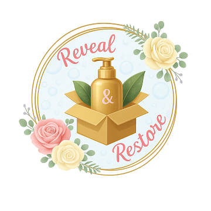
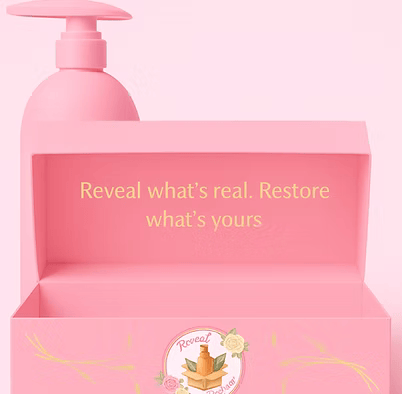
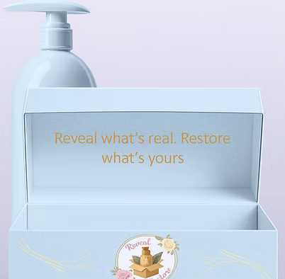

AI Skin Scan
Personalized skincare & self-care in seconds
Skin Type
Main Goal
Routine Style
Analyzing Your Profile


Mapping facial zones…
Your Personalized Routine
Shop Your Routine
Scan to purchase recommended products